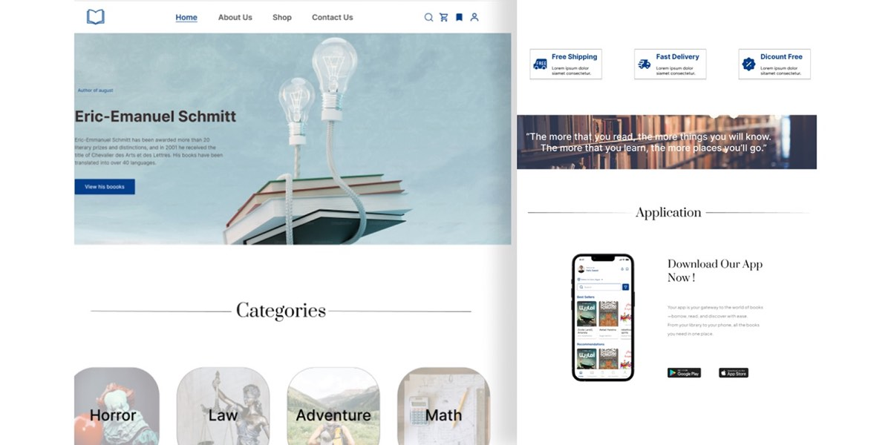

الموقع التسويقي لتطبيق Book Hub للقراءة — تصفّح الفئات واكتشف الكتّاب وحمّل التطبيق.
صفحة هبوط Book Hub هي البوابة الإلكترونية لتطبيق القراءة. مهمتها واحدة: أن يشعر الزائر بمتعة القراءة خلال ثوانٍ، ثم ينتقل لتصفّح الكتب أو تحميل التطبيق.
صُممت بالتوازي مع تطبيق Book Hub، فتشاركه الهوية والخطوط والصور التي تضع الكتاب في المقدمة، وتخاطب نفس القرّاء: الطلاب ومحبي الكتب الباحثين عن كتب بأسعار مناسبة ومحتوى عربي أكثر.
مساحة في أعلى الصفحة لكاتب مشهور مع رابط مباشر لكتبه.
رعب، قانون، مغامرة، سياسة، فانتازيا، تاريخ، رياضيات، طعام — بضغطة واحدة.
رف لأفضل الكتب مع اسم الكاتب والسعر.
دعوة واضحة لتحميل التطبيق مع إبراز الشحن المجاني.


2 لوحة · البحث ورحلات المستخدم ونظام التصميم وكل الشاشات